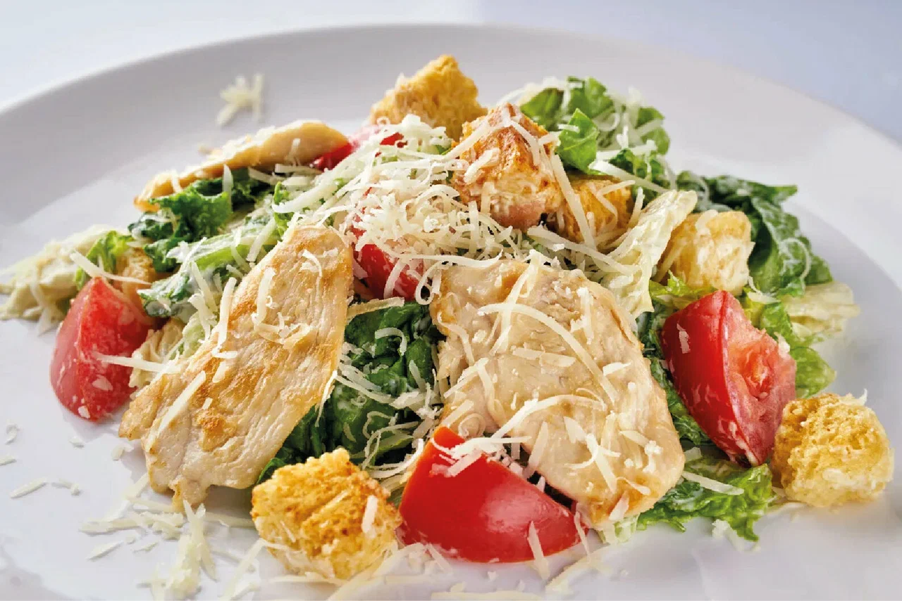
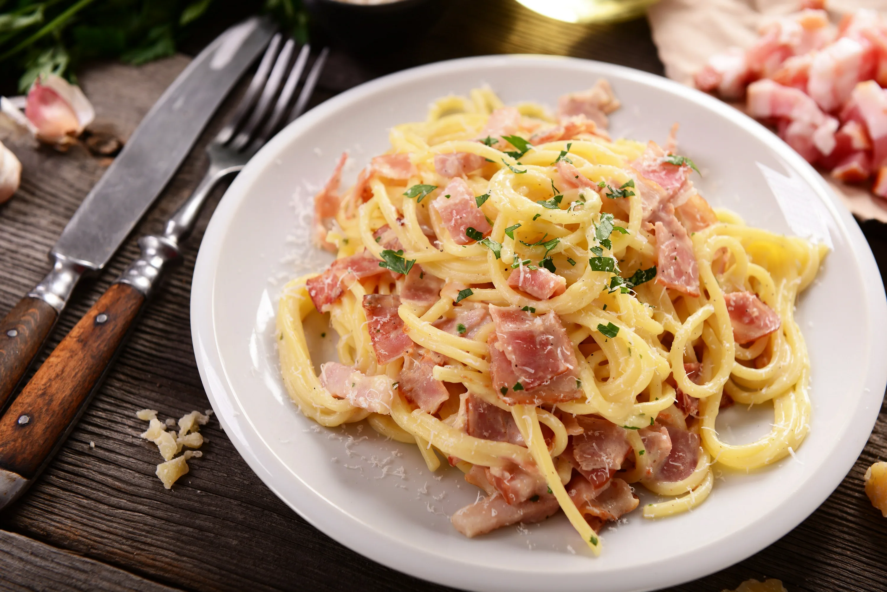

Кулинарные рецепты

Салат Цезарь с курицей
Ингредиенты (на 2 порции):
- Листья салата - 1 пучок
- Куриное филе - 300 г
- Сухарики - 100 г
- Сыр Пармезан - 50 г
- Соус Цезарь - по вкусу
- Чеснок - 1 зубчик
- Оливковое масло - 2 ст.л.
Способ приготовления:
- Куриное филе нарезать полосками, посолить, поперчить. Обжарить на оливковом масле с чесноком до готовности.
- Листья салата промыть, обсушить и порвать руками на крупные куски.
- На сухой сковороде обжарить сухарики до золотистого цвета.
- В большой миске смешать салат, курицу и сухарики.
- Заправить соусом Цезарь, аккуратно перемешать.
- Перед подачей посыпать тертым пармезаном.

Паста Карбонара
Ингредиенты (на 2 порции):
- Спагетти - 250 г
- Бекон - 150 г
- Сливки 20% - 200 мл
- Яйца - 2 шт.
- Сыр Пармезан - 50 г
- Чеснок - 2 зубчика
- Соль, перец - по вкусу
Способ приготовления:
- Спагетти отварить в подсоленной воде согласно инструкции на упаковке.
- Бекон нарезать небольшими кусочками и обжарить до хрустящей корочки.
- В отдельной миске взбить яйца со сливками, добавить тертый сыр, соль и перец.
- Чеснок измельчить и добавить к бекону, обжарить 1 минуту.
- Слить воду со спагетти, оставив немного воды.
- Смешать горячие спагетти с беконом, затем добавить яично-сливочную смесь, быстро перемешивая.
- Подавать сразу, посыпав дополнительно тертым сыром.